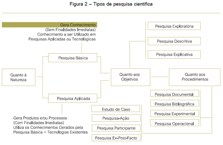

A pesquisa científica é uma atividade humana, cujo objetivo é conhecer e explicar os fenômenos, fornecendo respostas às questões significativas para a compreensão da natureza. Para essa tarefa, o pesquisador utiliza o conhecimento anterior acumulado e manipula cuidadosamente os diferentes métodos e técnicas para obter resultado pertinente às suas indagações. (PRODANOV, 2013, p. 48)
Assim, a pesquisa pode ser iniciada de uma simples curiosidade ou da observação de fatos cotidianos. A pesquisa científica, contudo, é mais do que uma simples indagação. Como atividade científica completa, ela percorre desde a formulação do problema até a apresentação dos resultados.
A pesquisa é dividida em vários tipos, de acordo com sua natureza, objetivos e procedimentos. Utilizaremos, para este estudo, a divisão proposta por Prodanov (2013, p. 49 - 72)
TUDO PODE SER QUANTIFICÁVEL...
Partindo dessa afirmação, a pesquisa quantitativa tende a traduzir as informações em números e para classificá-las e analisa-las. Requer uso de técnicas estatísticas (percentagem, média, mediana, desvio-padrão etc.) Utilizada em diversos tipos de pesquisas, inclusive nas descritivas, como para:
[...] analisar a interação de certas variáveis, compreender e classificar processos dinâmicos experimentados por grupos sociais, apresentar contribuições no processo de mudança, criação ou formação de opiniões de determinado grupo e permitir, em maior grau de profundidade, a interpretação das particularidades dos comportamentos ou das atitudes dos indivíduos. (PRODANOV, p. 70, 2014)
Exemplo:

Considera que há uma relação dinâmica entre o mundo real e o sujeito, isto é, um vínculo indissociável entre o mundo objetivo e a subjetividade do sujeito que não pode ser traduzido em números. A interpretação dos fenômenos e a atribuição de significados são básicas no processo de pesquisa qualitativa. Esta não requer o uso de métodos e técnicas estatísticas. O ambiente natural é a fonte direta para coleta de dados e o pesquisador é o instrumento-chave. Tal pesquisa é descritiva. Os pesquisadores tendem a analisar seus dados indutivamente. O processo e seu significado são os focos principais de abordagem. (Prodanov, p. 70, 2014)
O ambiente é a fonte direta dos dados. O centro não são os dados estatísticos.
A utilização desse tipo de abordagem difere da abordagem quantitativa pelo fato de não utilizar dados estatísticos como o centro do processo de análise de um problema, não tendo, portanto, a prioridade de numerar ou medir unidades. Os dados coletados nessas pesquisas são descritivos, retratando o maior número possível de elementos existentes na realidade estudada.
A)PESQUISA BÁSICA: O intuito desta pesquisa é gerar conhecimento útil, através da investigação de novos fenômenos físicos e seus fundamentos. “Envolve verdades e interesses universais” (Prodanov, 2013, p. 51).
B)PESQUISA APLICADA: Tem como característica a geração de conhecimentos para aplicação prática relacionado a problemas específicos. “Envolve verdades e interesses locais” (Prodanov, 2013, p. 51). Seus resultados são visíveis
Exemplo de Pesquisa Aplicada:
a) PESQUISA EXPLORATÓRIA Esta pesquisa tem como objetivo proporcionar maior familiaridade com o problema, com vistas a torná-lo mais explícito. Utilizada na pesquisa em fase preliminar, objetiva proporcionar mais informações sobre o tema, para defini-lo e orientar a fixação dos objetivos, bem como formulação de hipóteses ou descoberta de novo enfoque para o assunto. Assim, é uma forma de acumulação de conhecimento sobre informações disponíveis no momento sobre o problema, procurando um entendimento sobre a natureza geral do assunto a ser estudado. Geralmente, assume a forma de pesquisa bibliográfica e estudo de caso. Envolve: - Levantamento bibliográfico; - Entrevistas, com pessoas que detenham algum conhecimento com o problema; - análise de exemplos
b) PESQUISA DESCRITIVA: Tem como objetivo primordial a descrição das características de determinadas populações ou fenômenos. Uma de suas características está na utilização de técnicas padronizadas de coleta de dados, tais como o questionário e a observação sistemática. Caracteriza-se pelos seguintes elementos: - REGISTRO E DESCRIÇÃO DOS FATOS, sem interferência. - CLASSIFICAR, EXPLICAR e INTERPRETAR.
Destacam-se também na pesquisa descritiva aquelas que visam descrever características de grupos (idade, sexo, procedência etc.), como também a descrição de um processo numa organização, o estudo do nível de atendimento de entidades, levantamento de opiniões, atitudes e crenças de uma população, etc.
Também são pesquisas descritivas aqueles que visam descobrir a existência de associações entre variáveis, como, por exemplo, as pesquisas eleitorais que indicam a relação entre o candidato e a escolaridade dos eleitores.
Ex. Pesquisa de opinião, mercadológicas, levantamentos socioeconômicos e psicossociais.
c) PESQUISA EXPLICATIVA A preocupação central é identificar os fatores que determinam ou que contribuem para a ocorrência dos fenômenos. É o tipo que mais aprofunda o conhecimento da realidade. Visa definir leis mais amplas, com a estruturação e definição de modelos teóricos. Por isso, é o tipo mais complexo e delicado.
Registra fatos → analisa-os → interpreta-os→ identifica suas causas.
Nas ciências naturais, utiliza o MÉTODO EXPERIMENTAL, que possibilita a manipulação e controle das variáveis.
Nas ciências sociais, utiliza o método observacional.
Assumem, em geral, as formas de pesquisa experimental e pesquisa ex-post-facto (veremos a seguir).
Objetivo primordial: aprofundamento da realidade, por meio da MANIPULAÇÃO E CONTROLE de variáveis.
a) Pesquisa bibliográfica: Desenvolvida com base em material já elaborado, constituído principalmente de livros e artigos científicos.
CUIDADO com textos retirados da Internet. Confirmem a veracidade dos dados e que o artigo tenha sido publicado em uma base de dados confiável!
DIGA NÃO A WIKIPÉDIA“Na pesquisa bibliográfica, é importante que o pesquisador verifique a veracidade dos dados obtidos, observando as possíveis incoerências ou contradições que as obras possam apresentar.” (PRODANOV, p. 54)
Fontes: livros, revistas, publicações em periódicos e artigos científicos, jornais, boletins, monografias, dissertações, teses, material cartográfico, internet...
b) Pesquisa documental: Embora parecida com a pesquisa bibliográfica, diferencia-se desta de acordo com a natureza das fontes. A pesquisa documental vale-se de materiais que não receberam ainda um tratamento analítico, ou que ainda podem ser reelaborados de acordo com os objetos da pesquisa.
As fontes da pesquisa documental podem ser divididas em “primeira mão” e “segunda mão”. (Documentos de “primeira mão”: documentos de arquivos, igrejas, sindicatos, reportagens de jornal, contratos, instituições etc.)
Documentos de “Segunda mão”: já foram processados, mas podem receber outras interpretações, como relatórios de empresas, tabelas etc.
Deve haver uma AVALIAÇÃO CRÍTICA DE CONTEÚDO:
- Crítica do texto: verifica se o texto é autógrafo (escrito pela mão do autor).
Trata-se de um rascunho? É original? Cópia de primeira ou de segunda mão?
- Crítica de autenticidade: procura determinar quem é o autor, o tempo e as circunstâncias da composição. Podemos utilizar testemunhos externos ou analisar a obra internamente para descobrirmos sua data.
- Crítica da origem: investiga a origem do texto em análise, já que ela fundamenta a garantia da autenticidade.
Os locais de pesquisa, os tipos e a utilização de documentos podem ser:
- Arquivos públicos (municipais estaduais e nacionais);
- Documentos oficiais: anuários, editoriais, ordens régias, leis, atas, relatórios, ofícios, correspondências, panfletos etc.;
- Documentos jurídicos: testamentos, inventários e todos os materiais oriundos de cartórios;
- Coleções particulares: ofícios, correspondências, autobiografias, memórias etc.; iconografia: imagens, quadros, monumentos, fotografias etc.;
- Materiais cartográficos: mapas, plantas etc.;
- Arquivos particulares (instituições privadas ou domicílios particulares): igrejas, bancos, indústrias, sindicatos, partidos políticos, escolas, residências, hospitais, agências de serviço social, entidades de classe etc.;
-Documentos eclesiásticos, financeiros, empresariais, trabalhistas, educacionais, memórias, fotografias, diários, autobiografias etc.
"Cartas censuradas pelo nazismo são encontradas em colégio no Paraná Correspondências foram enviadas por uma religiosa que vivia em Londrina. Material foi encontrado por voluntários que organizam o acervo do colégio [...]
A organização do acervo do Colégio Mãe de Deus, em Londrina, no
norte do Paraná, revelou aos voluntários uma descoberta histórica.
Cartas que haviam sido enviadas por uma freira, entre 1939 e 1941,
endereçadas a parentes dela na Alemanha, estavam guardadas entre
os pertences da religiosa. As correspondências nunca chegaram ao
destino, pois foram censuradas pelo governo nazista. As cartas
escritas pela freira de Schoenstatt irmã Mariavirgo foram
devolvidas ao colégio quase 50 anos depois de serem remetidas. Com
a descoberta, os materiais devem ir para o acervo do colégio,
fundado em 1936. [...] As cartas são escritas em papel de seda e
outros tipos. Provavelmente, a irmã utilizou bico de pena e
apresenta uma bela caligrafia. Em cada correspondência, Mariavirgo
inicia com a saudação “Ave Maria”. Na primeira carta, datada de 15
de outubro de 1939, irmã Mariavirgo já mostra preocupação se as
correspondências enviadas estavam mesmo chegando ao destino “Ontem
recebi a noticia que a carta teve um desvio”, escreveu. [...] Nos
envelopes, estão inscrições mencionando que as cartas foram
abertos e passaram por um censor. Uma delas tem o adesivo escrito
"censor 1162", número referente provavelmente ao funcionário que
violou a correspondência. Também são vistos vários carimbos do
alto comando das Forças Armadas do governo nazista. [“...]”.
Disponível em:
http://g1.globo.com/pr/norte-noroeste/noticia/2014/03/cartas-censuradas-pelo-nazismo-sao-encontradas-em-colegio-no-parana.html>
. Acesso em 20 de Setembro de 2014.
c) Pesquisa experimental: quando se determina um objeto de
estudo, selecionam-se as variáveis que seriam capazes de
influenciá-lo, define-se as formas de controle e de observação dos
efeitos que a variável produz no objeto. Manipular diretamente as
variáveis.
Surge em Situações que necessitam de controle.
Exemplo: Pinga-se uma gota de ácido numa placa de metal para
observar o resultado.
d) Levantamento (survey): é a interrogação direta das pessoas cujo comportamento se deseja conhecer. Procede-se à solicitação de informações a um grupo significativo de pessoas acerca do problema estudado para, em seguida, mediante análise quantitativa, obterem-se as conclusões correspondentes aos dados coletados.
Quanto o levantamento recolhe informações de todos os integrantes do universo pesquisado, tem-se um censo.
[...] não são pesquisados todos os integrantes da população estudada. Antes selecionamos, mediante procedimentos estatísticos, uma amostra significativa de todo o universo, que é tomada como objeto de investigação. As conclusões obtidas a partir dessa amostra são projetadas para a totalidade do universo, levando em consideração a margem de erro, que é obtida mediante cálculos estatísticos. (GIL, 2010, p. 35).
Esse tipo de Pesquisa é complexa, pois utiliza questionários e entrevistas, em pesquisa quantitativa. Tem natureza retrospectiva, pois é uma pesquisa que busca analisar fatos que já ocorreram e requer uma análise dos dados levantados.

Assista ao vídeo e compreenda melhor o tema:
https://www.youtube.com/watch?v=1nd4lcb1Z-g
Para pesquisas desse tipo, necessário fazer um questionário ou roteiro para uma entrevista.
O Google possui uma ferramenta que possibilita a confecção de questionários e envio por e-mail para os participantes, através do Google Drive e sua ferramenta Formulários. Esse tipo de tecnologia facilita a validação dos dados, pois o próprio sistema faz os cálculos e até disponibiliza os gráficos!
Exemplo:
Acesse o link externo e veja um exemplo de Questionário.
http://goo.gl/mgycxB
Respostas do Formulário:
e) Pesquisa de campo: procura o aprofundamento de uma realidade específica. É basicamente realizada por meio da observação direta das atividades do grupo estudado e de entrevistas com informantes para captar as explicações e interpretações do ocorre naquela realidade.
Para Ventura (2002, p. 79), a pesquisa de campo deve merecer grande atenção, pois devem ser indicados os critérios de escolhada amostragem (das pessoas que serão escolhidas como exemplares de certa situação), a forma pela qual serão coletados os dados e os critérios de análise dos dados obtidos.
“Primeiramente, os levantamentos procuram ser representativos de um universo definido e fornecer resultados caracterizados pela precisão estatística” (GIL, 2008, p. 57). Em relação aos estudos de campo, “procuram muito mais o aprofundamento das questões propostas do que a distribuição das características da população segundo determinadas variáveis.” (GIL, 2008, p. 57). No estudo de campo, estudamos um único grupo ou uma comunidade em termos de sua estrutura social, Assim, “o estudo de campo tende a utilizar muito mais técnicas de observação do que de interrogação.” (GIL, 2008, p. 57).
f) Estudo de caso: consiste no estudo profundo e exaustivo de um ou poucos objetos, de maneira que permita seu amplo e detalhado conhecimento.
“um estudo de caso é uma investigação empírica que investiga um fenômeno contemporâneo dentro de seu contexto da vida real, especialmente quando os limites entre o fenômeno e contexto não estão claramente definidos.”
Dito isso, o estudo de caso vem sendo utilizado com frequência pelos pesquisadores sociais, visto servir a pesquisas com diferentes propósitos, como:
- explorar situações da vida real cujos limites não estejam claramente definidos;
- descrever a situação do contexto em que está sendo feita determinada investigação;
- explicar as variáveis causais de determinado fenômeno em situações muitocomplexas que não possibilitem a utilização de levantamentos e experimentos.
Características (PRODANOV, 2013, p. 54):
-é um sistema limitado e tem fronteiras em termos de tempo, eventos ou processos, as quais nem sempre são claras e precisas;
-é um caso sobre algo, que necessita ser identificado para conferir foco e direção à investigação;
-é preciso preservar o caráter único, específico, diferente, complexo do caso;
-a investigação decorre em ambiente natural;
-o investigador recorre a fontes múltiplas de dados e a métodos de coleta diversificados: observações diretas e indiretas, entrevistas, questionários, narrativas, registros de áudio e vídeo, diários, cartas, documentos, entre outros.

Fonte: MIGUEL, Paulo Augusto Cauchick. Estudo de caso na engenharia de produção: estruturação e recomendações para sua condução. Prod., São Paulo , v. 17, n. 1, Apr. 2007
g) Pesquisa ex-post-facto:
Quando o “experimento” se realiza depois dos fatos. A pesquisa ex-post-facto analisa situações que se desenvolveram naturalmente após algum acontecimento. É muito utilizada nas ciências sociais, pois permite a investigação de determinantes econômicos e sociais do comportamento da sociedade em geral. Estudamos um fenômeno já ocorrido, tentamos explicá-lo e entendê-lo.
Ex1.: Analisar a modificação de pensamento de uma turma sobre um determinado assunto após uma palestra.
Ex2.: Analisar a mudança de comportamento dos alunos com a adoção de uma nova técnica de ensino.
Ex3.: Analisar o desenvolvimento trazido pela instalação de uma indústria em uma cidade.
h) Pesquisa Ação:
“[...] pesquisa social com base empírica que é concebida em estreita associação com uma ação ou com a resolução de um problema coletivo e no qual os pesquisadores e os participantes representativos da situação ou do problema estão envolvidos de modo cooperativo ou participativo.” (THIOLLENT, 1998, p. 14).
Com a pesquisa-ação, os pesquisadores pretendem desempenhar um papel ATIVO na própria realidade dos fatos observados.
Dessa forma, através de engajamento sociopolítico a serviço da causa das classes populares, como por exemploquando é voltada para uma orientação de ação emancipatória e de grupos sociais que pertencem às classes populares e dominadas, existindo “uma grande diversidade entre as propostas de caráter militar; as propostas informativas e conscientizadas das áreas educacionais e de comunicação e, finalmente, as propostas ‘eficientizantes’ das áreas organizacional e tecnológica. (THIOLLENT, 1998, p. 14).
Principais aspectos da pesquisa-ação (THIOLLENT, 1998):
- há ampla e explícita interação entre pesquisadores e pessoas implicadas na situação investigada;
- dessa interação resulta a ordem de prioridade dos problemas a serem encaminhados sob forma de ação concreta;
- o objeto de investigação não é constituído pelas pessoas e sim pela situação social e pelos problemas de diferentes naturezas encontrados nessa situação;
- o objetivo da pesquisa-ação consiste em resolver ou pelo menos esclarecer os problemas da situação observada;
- há, durante o processo, acompanhamento das decisões, das ações e de toda a atividade intencional dos atores da situação;
- há, durante o processo, acompanhamento das decisões, das ações e de toda a atividade intencional dos atores da situação;
JÁ PENSOU EM FAZER UMA PESQUISA AÇÃO EM SUA ESCOLA OU COMUNIDADE?
Os links abaixo trabalham a importância da necessidade na articulação entre teoria e prática para a produção de conhecimentos e solução de problemas:
LIVRO: Pesquisa Ação Comunitária
http://www.moderna.com.br/lumis/portal/file/fileDownload.jsp?fileId=8A8A8A8338E1A2E00138E7767BF142D9
TOLEDO, Renata Ferraz de; JACOBI, Pedro Roberto. Pesquisa-ação e educação: compartilhando princípios na construção de conhecimentos e no fortalecimento comunitário para o enfrentamento de problemas. Educ. Soc., Campinas , v. 34, n. 122, Mar. 2013 .
Available from http://www.scielo.br/scielo.php?script=sci_arttext&pid=S0101-73302013000100009&lng=en&nrm=iso>. accesson 17 Nov. 2014. http://dx.doi.org/10.1590/S0101-73302013000100009.
i) Pesquisa Participante: Se desenvolve a partir da interação entre pesquisadores e membros das situações investigadas.
A PESQUISA PARTICIPANTE É INTRÍNSECA À PRÁTICA NACLASSIFICAÇÃO APRESENTADA POR DEMO (2000, P.21), PARA FINS DE SISTEMATIZAÇÃO:′ Segundo esse autor, a pesquisa prática “é ligada à práxis, ou seja, à prática histórica em termos de usar conhecimento científico para fins explícitos de intervenção; nesse sentido, não esconde sua ideologia, sem com isso necessariamente perder de vista o rigor metodológico”
Para ser realizada:
- O investigador deve estar sempre presente no ambiente estudado, para que possa “ver as coisas de dentro”.
- Se envolve nas atividades e co-vivencia interesses e fatos do grupo investigado.
- Assume o papel de “integrante do grupo” para poder atingir o sentido de suas ações
Thiollent (1997) diz que “Toda pesquisa-ação possui um caráter participativo, pelo fato de promover ampla interação entre pesquisadores e membros representativos da situação investigada. Nela existe vontade de ação planejada sobre os problemas detectados na fase investigada” (p. 21)
Pálido o marco diferencial, pois não é possível perceber com clareza esta divergência entre Pesquisa Participante e Pesquisa Ação, e se existe, está sendo superada. Para Thiollent (1997) o que mantém um determinado afastamento entre ambas as pesquisas é a distância que seus defensores cultivam ao longo dos anos, tornando difícil a convivência entre o pragmatismo da Pesquisa Ação e a conscientização pretendida pela Pesquisa Participante. (http://baixadacarioca.wordpress.com/2012/03/19/pesquisa-participante-o-que-e-como-se-faz/)
Dessa forma, podemos dizer que a diferença reside no fato de que na Pesquisa Ação o grupo conhece os objetivos e participa do processo de sua realização, com o envolvimento direto do grupo no planejamento da pesquisa, cuja finalidade é contribuir para solucionar alguma dificuldade ou problema real do grupo pesquisado. O resultado é revertido em benefício do grupo, pois servirá como subsídio para propor soluções. A população envolvida irá identificar por si mesma os seus problemas e ajudar a elaborar a solução.
QUER ELABORAR UMA PESQUISA PARTICIPANTE?
Veja o site, com o passo a passo para realização de uma pesquisa participante na comunidade:
http://grupodepesquisaemagroecologia.blogspot.com.br/2011/10/pesquisa-participativa-e-pesquisa-acao_13.html
VAMOS REVISAR?
Veja o site: https://www.youtube.com/watch?v=_O6ldjySTLQ
RESUMO:
Classificação da Pesquisa


FÓRUM:
Vimos diversos tipos de pesquisa. Ao longo deste fórum, iremos trabalhar os tipos de pesquisa e suas especificidades. Observando a classificação das pesquisas, qual tipo de pesquisa você já realizou ou está em fase de planejamento?
Destaque um tipo de pesquisa e mostre para a turma as características que você considera importantes.
REFERENCIAS:
LOPES, Oswaldo Ubríaco. Pesquisa básica versus pesquisa aplicada. Estud. av., São Paulo , v. 5, n. 13, Dec. 1991..
Disponível em : Available from
VILAÇA, Márcio Luiz Corrêa. Pesquisa e ensino: considerações e reflexões.Revista do Curso de Letras da UNIABEU Nilópolis, v. I, Número2, Mai. -Ago. 2010.
Disponível em :
http://www.unisc.br/portal/upload/com_arquivo/pesquisa_e_ensino_consideracoes_e_reflexoes.Pdf>.
Responsável: Professora Nidia Barone
Universidade Federal do Ceará - Instituto UFC Virtual